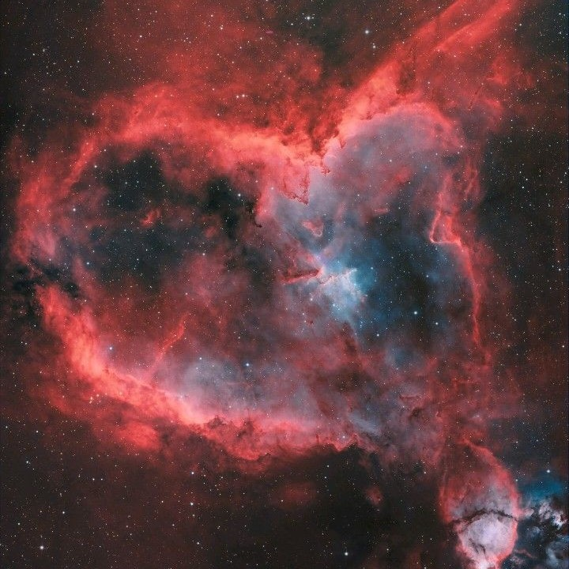
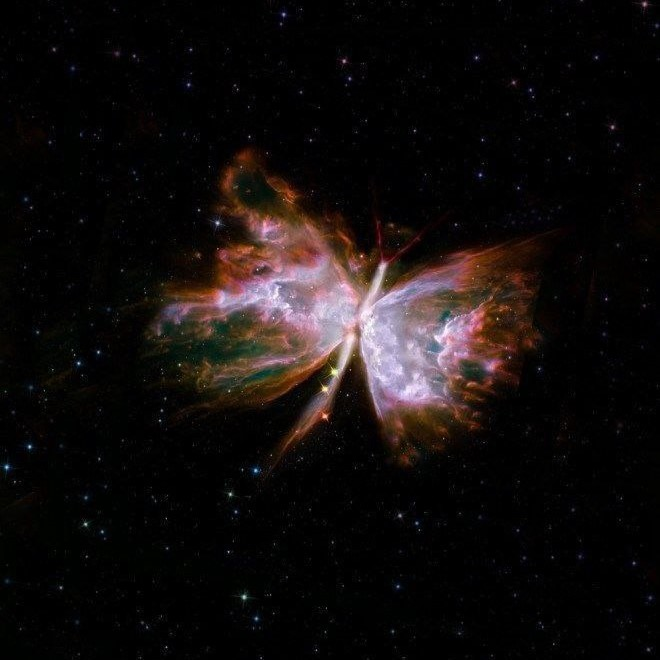

Деякі зірки Плеяд мають великі швидкості обертання навколо осі, складові для верхніх шарів 150 – 300 км/сек! При такому обертанні їх форма має набути форми сфероїда. Найбільш швидко обертається навколо осі зірка Плейона, яка є змінною зіркою, що змінює свій блиск від +4,8 до +5,5m. Спектральні дослідження показали, що в період з 1938 по 1952 надзвичайно швидке обертання Плейони призвело до викиду зіркою газу в міжзоряний простір.

Туманність «Серце» або Туманність «Біг, що біжить», IC 1805, S2-190 — емісійна туманність, яка знаходиться на відстані 7500 світлових років від Землі. Знаходиться в рукаві Персея в галактиці Чумацький Шлях у сузір'ї Кассіопея.

Крабовидна туманність є залишками наднової, вибух якої спостерігався, згідно з записами арабських та китайських астрономів, 4 липня 1054 року. Спалах було видно протягом 23 днів неозброєним оком навіть у денний час. Вперше була відкрита Джоном Бевісом у 1731 році, потім перевідкрита Месьє у 1758 році.
© Mineeva , 2024